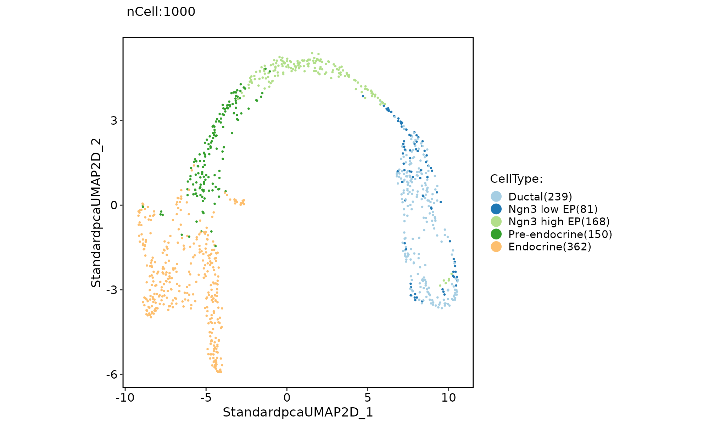

Standard_SCP.RdSingle cell pipeline for the single dataset.
Standard_SCP(
srt,
prefix = "Standard",
do_normalization = NULL,
normalization_method = "logCPM",
do_HVF_finding = TRUE,
HVF_method = "vst",
nHVF = 2000,
HVF = NULL,
do_scaling = TRUE,
vars_to_regress = NULL,
regression_model = "linear",
liner_reduction = "pca",
liner_reduction_dims = 100,
liner_reduction_distance = "euclidean",
liner_reduction_dims_use = NULL,
force_liner_reduction = FALSE,
nonliner_reduction = "umap",
nonliner_reduction_dims = c(2, 3),
nonliner_reduction_distance = "cosine",
do_cluster_finding = TRUE,
cluster_algorithm = "louvain",
cluster_resolution = 0.6,
cluster_reorder = TRUE,
seed = 11,
...
)A Seurat object.
The prefix used to name the result.
Whether to normalize the data. If NULL, will automatically determine.
Normalization method.Can be one of "logCPM", "SCT".
Whether to find the high variable features(HVF). If NULL, will automatically determine.
HVF number to use.
Custom high variable features.
Whether to scale the data. If NULL, will automatically determine.
Variables to regress out.
Use a linear model or generalized linear model (poisson, negative binomial) for the regression. Options are 'linear' (default), 'poisson', and 'negbinom'
Liner reduction method name. Can be one of "pca", "ica", "nmf", "mds", "glmpca".
Dimensions to calculate when performing liner reduction.
A distance method if liner reduction need.
Which dimensions to use.
Non-liner reduction method name. Can be one of "umap","umap-naive", "tsne", "dm".
Dimensions to calculate when performing non-liner reduction.
A distance method if non-liner reduction need.
Algorithm for modularity optimization when finding clusters.
Cluster resolution parameter.
Whether to reorder the cluster names using hierarchical clustering.
Set a random seed.
A Seurat object containing the result.
data("pancreas1k")
pancreas1k <- Standard_SCP(srt = pancreas1k)
#> [2022-06-21 11:18:06] Start Standard_SCP
#> [2022-06-21 11:18:06] Checking srtList... ...
#> Data 1/1 of the srtList is raw counts. Perform NormalizeData(logCPM) on the data ...
#> Perform FindVariableFeatures on the data 1/1 of the srtList...
#> Use the separate HVF from the existed HVF in srtList...
#> [2022-06-21 11:18:08] Finished checking.
#> Perform ScaleData on the data...
#> Perform linear dimension reduction (pca) on the data...
#> Perform FindClusters (louvain) on the data...
#> Reorder clusters...
#> Perform nonlinear dimension reduction (umap) on the data...
#> Found more than one class "dist" in cache; using the first, from namespace 'BiocGenerics'
#> Also defined by ‘spam’
#> Found more than one class "dist" in cache; using the first, from namespace 'BiocGenerics'
#> Also defined by ‘spam’
#> Found more than one class "dist" in cache; using the first, from namespace 'BiocGenerics'
#> Also defined by ‘spam’
#> Found more than one class "dist" in cache; using the first, from namespace 'BiocGenerics'
#> Also defined by ‘spam’
#> [2022-06-21 11:18:28] Standard_SCP done
#> Elapsed time: 22.49 secs
ClassDimPlot(pancreas1k, group.by = "CellType")
